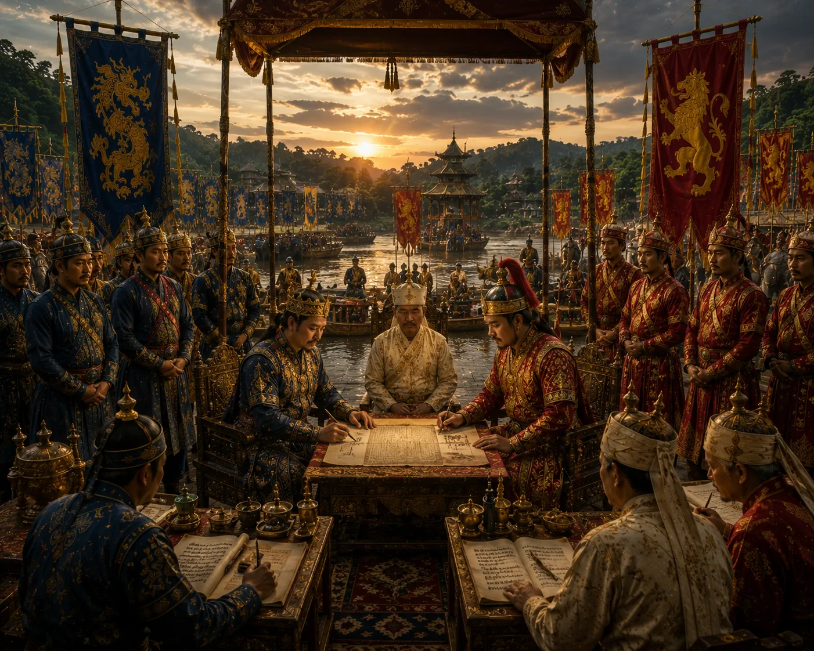

Chao Pulai's Revolt and Alliance with Kamata
c. 1335 · The coming of Sukaphaa

Chao Pulai disputes the succession of his half-brother Sukhrangphaa and conspires with maternal Kamata envoys for military support.
Sources have not yet been catalogued for this record.
People: Chao Pulai, Sukhrangphaa
Open this scene in the interactive archive · Follow this event on MAP